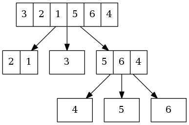
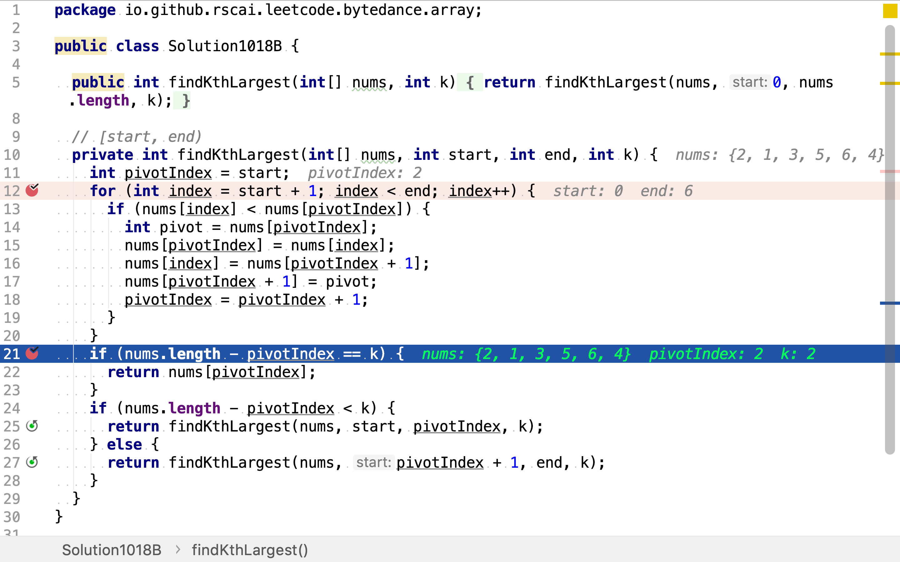

數組中的第K個最大元素
題目
在未排序的數組中找到第 k 個最大的元素。請注意，你需要找的是數組排序後的第 k 個最大的元素，而不是第 k 個不同的元素。
示例 1:
輸入: [3,2,1,5,6,4] 和 k = 2 輸出: 5示例 2:
輸入: [3,2,3,1,2,4,5,5,6] 和 k = 4 輸出: 4說明:
你可以假設 k 總是有效的，且 1 ≤ k ≤ 數組的長度。
快速排序法
先使用JDK提供的快速排序算法排序數組，再取倒數第k個值。
快速排序
快速排序（英語：Quicksort），又稱劃分交換排序（partition-exchange sort），簡稱快排，一種排序演算法，最早由東尼·霍爾提出。在平均狀況下，排序個項目要（大O符號）次比較。在最壞狀況下則需要次比較，但這種狀況並不常見。事實上，快速排序通常明顯比其他演算法更快，因為它的內部迴圈（inner loop）可以在大部分的架構上很有效率地達成。
演算法
快速排序使用分治法（Divide and conquer）策略來把一個序列（list）分為較小和較大的2個子序列，然後遞迴地排序兩個子序列。
步驟為：
- 挑選基準值：從數列中挑出一個元素，稱為「基準」（pivot），
- 分割：重新排序數列，所有比基準值小的元素擺放在基準前面，所有比基準值大的元素擺在基準後面（與基準值相等的數可以到任何一邊）。在這個分割結束之後，對基準值的排序就已經完成，
- 遞迴排序子序列：遞迴地將小於基準值元素的子序列和大於基準值元素的子序列排序。
遞迴到最底部的判斷條件是數列的大小是零或一，此時該數列顯然已經有序。
代碼
/*
* Sorting methods. Note that all public "sort" methods take the
* same form: Performing argument checks if necessary, and then
* expanding arguments into those required for the internal
* implementation methods residing in other package-private
* classes (except for legacyMergeSort, included in this class).
*/
/**
* Sorts the specified array into ascending numerical order.
*
* <p>Implementation note: The sorting algorithm is a Dual-Pivot Quicksort
* by Vladimir Yaroslavskiy, Jon Bentley, and Joshua Bloch. This algorithm
* offers O(n log(n)) performance on many data sets that cause other
* quicksorts to degrade to quadratic performance, and is typically
* faster than traditional (one-pivot) Quicksort implementations.
*
* @param a the array to be sorted
*/
public static void sort(int[] a) {
DualPivotQuicksort.sort(a, 0, a.length - 1, null, 0, 0);
}
複雜度分析
時間複雜度
Arrays.sort實現的是「Dual-Pivot」快速排序。時間複雜度是。
二分定位法
快速排序使用「基準（pivot）」將數組分為大小兩個子數組，再遞歸排序兩個子數組。當大小兩個數組劃分完成時，基準所處的位置即其在有序數組中最終所處的位置。所有小數子數組中的元素其最終位置都小於基準，所有大數子数組中的元素其最終位置都大於基準。所以，在確定基準元素所處位置後，就可以確定所求第k個元素處於大小兩個子數組中的某一個。
舉個例子，給定數組[3,2,1,5,6,4]，求第2大的值。
首先，以3為基準，將小於3的值都移到左側﹐大於等於3的值都移到右側，得到數組[2,1,3,5,6,4]。基準3位置2(0-based)，其是第4大元素，第2大的元素在右側大於3的子數組中。
然後，在右側子數組[5,6,4]中，以5為基準，將小於5的元素都移至其左側，大於等於5的元素移至右側，得到數組[4,5,6]。基準5位置1，正是所求第2大的元素。

代碼
先使用「快速排序」中使用的基準法，將數組分為小於和大於基準的兩部份。

然後，判斷基準是否就是所求第k大值。若是則計算結束；若第k大值在小於基準的子數組中，則在其中遞歸尋找第k大值；若第k大值在大於基準的子數組中，則在其中遞歸尋找第k大值。

複雜度分析
時間複雜度
一般情況下，每一次基準都把數組分成相等的兩部份。設初始數組長度，則每一次劃分後的一個數組長度為。時間複雜度為所有數組長度的累和：
空間複雜度
使用四個變量start, end, pivotIndex, pivot。空間複雜度為。